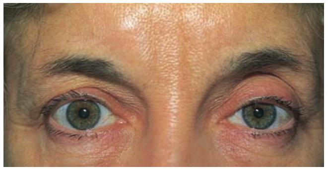
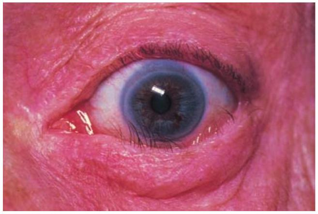
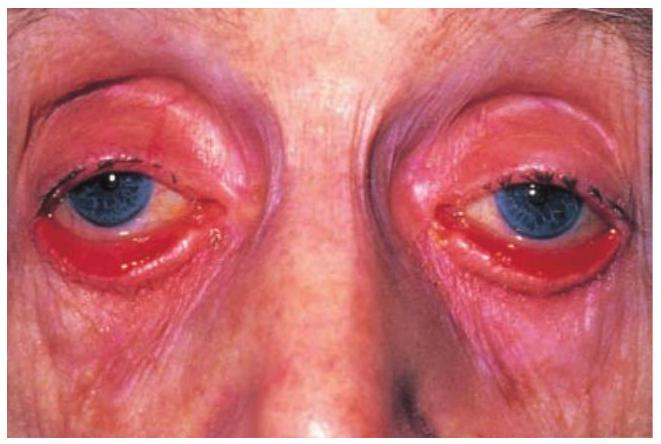
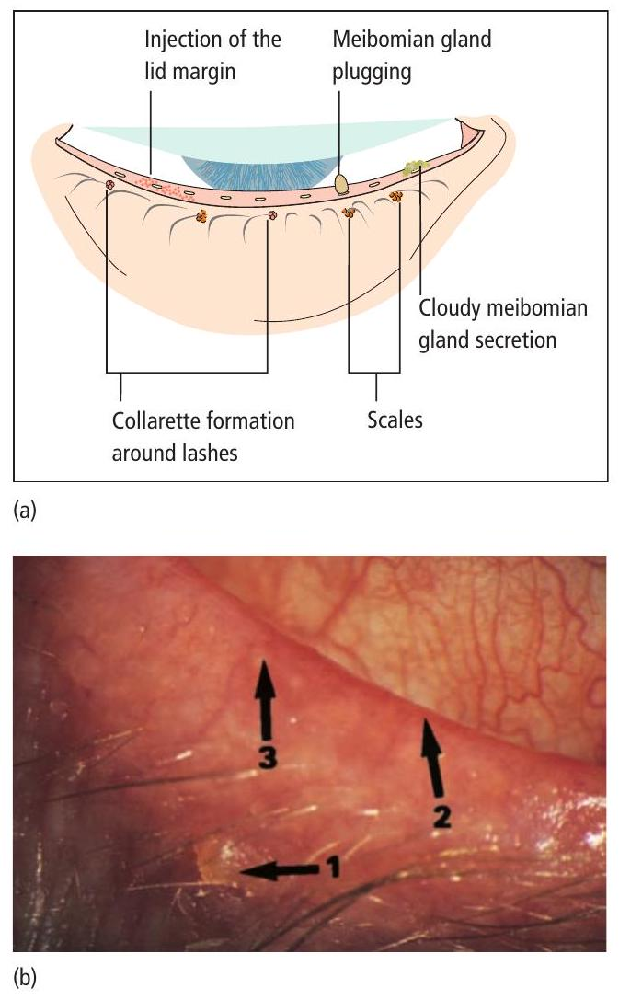
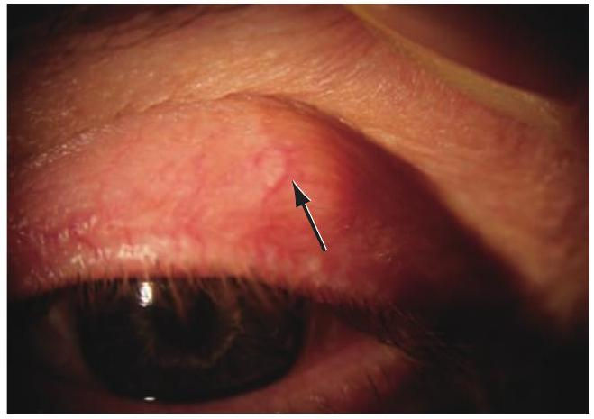
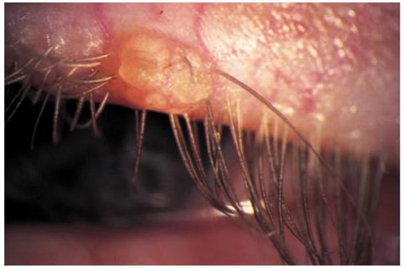
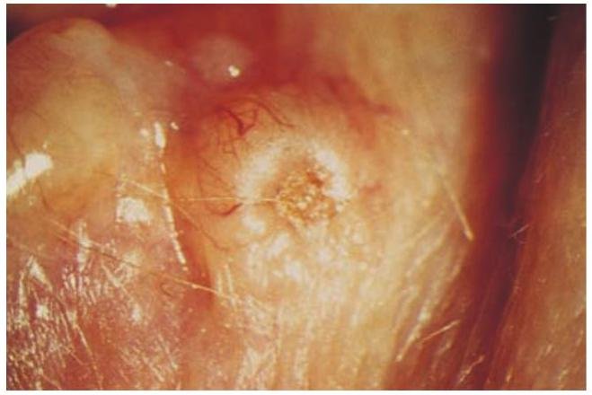
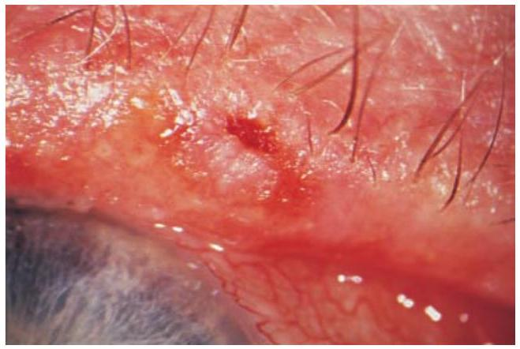

✓The symptoms, signs and causes of abnormal eyelid position.
✓The symptoms, signs and treatment of blepharitis.
✓The causes of lid swellings.
Introduction
The eyelids are important both in providing physical protection to the eyes and in ensuring a normal tear film and tear drainage. Diseases of the eyelids can be divided into those associated with:
abnormal lid position;
inflammation;
lid lumps;
abnormalities of the lashes.
Abnormalities of lid position
Ptosis
This is an abnormally low position of the upper eyelid (Figure 5.1).

Figure 5.1 Left ptosis.
Pathogenesis
It may be caused by:
Mechanical factors.
Large lid lesions pulling the lid down.
Lid oedema.
Tethering of the lid by conjunctival scarring.
Structural abnormalities, including a disinsertion of the aponeurosis of the levator muscle, usually in elderly patients.
Neurological factors.
Third nerve palsy (see Chapter 15).
Horner’s syndrome, due to a sympathetic nerve lesion (see Chapter 13).
Marcus-Gunn jaw-winking syndrome. In this congenital ptosis there is a congenital mis-wiring of the nerve supply to the pterygoid muscle of the jaw (cranial nerveV) and the levator of the eyelid (cranial nerve III) so that the eyelid moves in conjunction with movements of the jaw.
Myogenic factors.
Myasthenia gravis (see Chapter 15).
Some forms of muscular dystrophy.
Chronic external ophthalmoplegia.
Symptoms
Patients present because:
they object to the cosmetic effect;
vision may be impaired;
there are symptoms and signs associated with the underlying cause (e.g. asymmetric pupils in Horner’s syndrome, diplopia and reduced eye movements in a third nerve palsy).
Signs
There is a reduction in size of the palpebral aperture. The upper lid margin, which usually overlaps the upper limbus by 1–2 mm, may partially cover the pupil or the eye may be completely closed. The function of the levator muscle can be tested by measuring the maximum travel of the upper lid from full upgaze to full downgaze (normally 15–18 mm). It is common for the eyebrows to be elevated in the presence of ptosis, as a compensatory event which offsets the ptosis. Pressure on the brow (frontalis muscles) during the test will prevent this contribution to lid elevation. Other signs, associated with, for example, Horner’s syndrome or a third nerve palsy, may be present.
Four diagnostic tests may be performed if myasthenia is suspected.
In myasthenia, repeated elevation and depression of the eye results in an increased ptosis.
Manual retraction of the upper lid causes a ptosis or increased ptosis in the fellow eye. It is argued that the withdrawal of the stimulus to raise the retracted lid reduces the stimulus to elevation bilaterally.
Ask the patient to look down for 15 seconds and then look up at an elevated target. The lid overshoots and then falls slightly after the period of rest (Cogan’s twitch test).
Ice (in a rubber glove), applied to the lid for 2 minutes, significantly reduces a myasthenic ptosis.
Management
In the absence of a medically treatable disease such as myasthenia gravis, ptosis otherwise requires surgical correction. In very young children this is usually deferred, but may be expedited if the visual axis is covered and threatens to induce amblyopia.
Entropion
This is an inturning of the lid margin and lashes, usually of the lower lid, towards the globe (Figure 5.2). It may occur if the patient looks downwards or be induced by forced lid closure. It is seen most commonly in elderly patients where the orbicularis muscle is weakened. It may also be caused by conjunctival scarring, drawing the lid inwards (cicatricial entropion). The inturned lashes abrade the cornea and cause marked irritation of the eye. The eye may be red. Short-term treatment includes the application of lubricants to the eye or taping of the lid to turn the lashes away from the globe. The condition can be alleviated for a period by the injection of botulinum toxin into the palpebral part of the orbicularis muscle of the lower lid, or cured permanently by surgery.

Figure 5.2 Entropion.
Ectropion
Here there is an eversion of the lid away from the globe (Figure 5.3). Usual causes include:
age-related orbicularis muscle laxity;
scarring of the periorbital skin;
seventh nerve palsy.
The malposition of the lids everts the puncta and prevents drainage of the tears, leading to epiphora. It also exposes the conjunctiva and lower globe to dehydration (see Chapter 6). Ectropion causes an irritable eye. Surgical treatment is again an effective treatment.

Figure 5.3 Ectropion.
Inflammations of the eyelids
Blepharitis
This is a very common, chronic inflammation of the lid margins (Figure 5.4). In anterior blepharitis inflammation of the lid margin is concentrated in the lash line and accompanied by squamous debris around the eyelashes. The conjunctiva becomes injected. It is sometimes associated with a chronic staphylococcal infection. In severe disease the cornea is affected (blepharokeratitis). Small infiltrates or ulcers may form in the peripheral cornea (marginal keratitis) due to an immune complex response to staphylococcal exotoxins.
In posterior blepharitis (or meibomian gland dysfunction) the meibomian glands are usually obstructed by squamous debris. The two forms may occur independently.

Figure 5.4 Blepharitis. (a) A diagram showing the signs. (b) The clinical appearance of the lid margin. Note (1) the scales on the lashes, (2) dilated blood vessels on the lid margin and (3) plugging of the meibomian glands.
Symptoms
These include:
tired, itchy, sore eyes, worse in the morning;
crusting of the lid margins in anterior blepharitis and redness in both.
Signs
In anterior blepharitis there may be:
redness and scaling of the lid margins; some lash bases may be ulcerated – a sign of staphylococcal infection;
debris in the form of a collarette around the eyelashes (cylindrical dandruff). This may indicate an infestation of the lash roots by Demodex folliculorum.
a reduction in the number of eyelashes.
In posterior blepharitis there may be:
obstruction and plugging of the meibomian orifices;
Both forms of blepharitis are strongly associated with seborrhoeic dermatitis, atopic eczema and acne rosacea. In rosacea there is hyperaemia and telangiectasia of the facial skin and a rhinophyma (a bulbous irregular swelling of the nose with hypertrophy of the sebaceous glands).
Treatment
This is often difficult and must be long-term for these chronic conditions.
For anterior blepharitis, lid toilet with a cotton bud wetted with bicarbonate solution or diluted baby shampoo helps to remove squamous debris from the lash line. Topical steroids can reduce inflammation but must be used infrequently, to avoid steroid complications. Staphylococcal lid disease may also require therapy with topical antibiotics (e.g. fusidic acid gel), and occasionally with systemic antibiotics. Demodex infestation responds to the application of ‘tea tree oil’.
For meibomian gland dysfunction, abnormal secretions can be expressed by lid massage after hot bathing through the closed lids. If this treatment fails, then there may be a place for topical azithromycin drops. Alternatively, meibomian gland function can be improved by short courses of oral tetracycline. Where meibomian gland obstruction is extensive, the absence of an oily layer on the tear film can induce an evaporative dry eye, which requires treatment with artificial tears.
Prognosis
Although symptoms may be ameliorated by treatment, blepharitis may remain a chronic problem.
Benign lid lumps and bumps
Chalazion
This is a common, painless condition in which an obstructed meibomian gland causes a granuloma within the tarsal plate (Figure 5.5). Symptoms are of an unsightly lid swelling which usually resolves within 6 months. If the lesion persists it can be incised and the gelatinous contents curetted away.
An abscess (internal hordeolum) may also form within the meibomian gland and, unlike a chalazion, this is painful. It may respond to topical antibiotics but usually incision is necessary.
A stye (external hordeolum) is an exquisitely painful abscess of an eyelash follicle. Treatment requires the removal of the associated eyelash and application of hot compresses. Most cases are self-limiting, but occasionally systemic antibiotics are required.

Figure 5.5 Chalazion.
Molluscum contagiosum
This umbilicated lesion found on the lid margin is caused by a pox virus (Figure 5.6). It causes irritation of the eye. The eye is red, and small elevations of lymphoid tissue are found on the tarsal conjunctiva (follicular conjunctivitis). Treatment requires excision of the lid lesion.

Figure 5.6 Molluscum contagiosum.
Cysts
Various cysts may form on the eyelids. Sebaceous cysts are opaque. They rarely cause symptoms. They can be excised for cosmetic reasons. A cyst of Moll is a small translucent cyst on the lid margin caused by obstruction of a sweat gland. A cyst of Zeis is an opaque cyst on the eyelid margin caused by blockage of an accessory sebaceous gland. These too can be excised for cosmetic reasons.
Squamous cell papilloma
This is a common, frond-like lid lesion with a fibrovascular core and thickened squamous epithelium (Figure 5.7a). It is usually asymptomatic but can be excised for cosmetic reasons with cautery to the base.
Xanthelasmas
These are lipid-containing bilateral lesions which may in youth be associated with hypercholesterolaemia (Figure 5.7b). It is worth checking the blood cholesterol. They are excised for cosmetic reasons.
Keratoacanthoma
This is a brownish pink, fast-growing lesion with a central crater filled with keratin (Figure 5.7c). Treatment is by excision. Careful histology must be performed as some may have the malignant features of a squamous cell carcinoma (see below).
Naevus (mole)
These lesions are derived from naevus cells (altered melanocytes) and can be pigmented or non-pigmented. No treatment is necessary.
This is the most common form of malignant tumour (Figure 5.8). Ten per cent of cases occur in the eyelids and account for 90% of eyelid malignancies. The tumour is:
slow-growing;
locally invasive;
non-metastasizing.
Patients present with a painless lesion on the eyelid which may be nodular, sclerosing or ulcerative (the so-called rodent ulcer). Typically, it has a pale, pearly margin. A high index of suspicion is required. Treatment is by:

Figure 5.8 A basal cell carcinoma.
Excision biopsy with a margin of normal tissue surrounding the lesion. For large lesions threatening important tissues, excision may be controlled with frozen sections and serial sections used to determine the need for additional tissue removal (Mohs surgery). This minimizes destruction of normal tissue.
Cryotherapy.
Radiotherapy.
The prognosis is usually very good, but deep invasion of the tumour can be difficult to treat.
Squamous cell carcinoma
This is a less common but more malignant tumour which can metastasize to the lymph nodes. It can arise de novo or from pre-malignant lesions. It may present as a hard nodule or a scaly patch. Treatment is by excisional biopsy with a margin of healthy tissue.
Ultraviolet (UV) exposure is an important risk factor for both basal cell and squamous cell carcinoma.
When a squamous cell carcinoma is suspected, it is essential to check for the presence of affected cervical lymph nodes.
Abnormalities of the lashes
Trichiasis
This is a common condition in which aberrant eyelashes are directed backwards towards the globe. It is distinct from entropion. The lashes rub against the cornea and cause irritation and abrasion. It may result from any cicatricial process. In developing countries, trachoma (see Chapter 17) is an important cause and trichiasis is an important basis for the associated blindness.
Treatment is by epilation of the offending lashes. Recurrence can be treated with cryotherapy or electrolysis. Any underlying abnormality of lid position needs surgical correction.
Multiple choice questions
A 55-year-old woman presents with a small ptosis, and miosis on the same side. She is a smoker. The likely diagnosis is
Myasthenia gravis.
Marcus-Gunn syndrome.
Horner’s syndrome.
Third nerve palsy.
Conjunctival scarring.
Blepharitis is associated with
Cloudy meibomian secretions in posterior blepharitis.
Injection of the lid margin.
Marginal keratitis.
An inturned eyelid.
Debris around the base of an eyelash, termed a collarette.
A 70-year-old patient presents with the single lesion shown in Figure 5.9. It is slowly increasing in size. The most likely diagnosis is
Keratoacanthoma.
Basal cell carcinoma.
Squamous cell carcinoma.
Molluscum contagiosum.
Xanthelasma.

Figure 5.9 The clinical appearance of the eye referred to in Question 3.
Answers
A 55-year-old woman presents with a small ptosis, and miosis on the same side. She is a smoker.
False. This may cause a ptosis but does not cause miosis.
False. The eyelid moves in conjunction with jaw movements, again there is no miosis.
True. There is an interruption of the sympathetic supply to the iris dilator and to the smooth muscle of the upper lid. In this patient this may be caused by a tumour of the lung.
False. There would be a ptosis but the pupil would be dilated.
False. Once again this would not affect the size of the pupil.
Blepharitis is associated with
True. These may block the meibomian glands.
True. The lid margin is injected or inflamed.
True. In anterior blepharitis; due to staphylococcal sensitization.
False. There is no association between blepharitis and entropion.
True. This is a feature of anterior blepharitis.
A 70-year-old patient presents with the single lesion shown in Figure 5.9. It is slowly increasing in size.
False. There is no central crater filled with keratin.
True. Slow growth is usual, the shape is typical and the pearly margin is also characteristic.
False. The appearance differs and the condition is less common. It can however metastasize and must be considered in the differential diagnosis.
False. These lesions are usually umbilicated and may be associated with a red eye and tarsal follicles.
False. These lipid-laden lesions, usually bilateral, are not ulcerated.